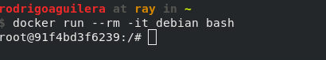
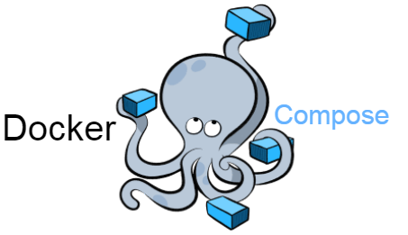

♥
Docker
Súbete al barco de las herramientas de desarrollo estándar 🚢
Hola 👋
¿Que tal vosotros?
Historia
¿Como hemos llegado hasta aqui?
Servidores de desarrollo local
- WAMP, XAMPP, MAMP, etc
- Gestores de paquetes: apt, rpm, brew (mac)
Virtualización completa
- Virtualbox, VMware, KVM
- Gestores de virtualización: vagrant
Otros gestores de virtualización ligera
- LXC
- chroot
Docker 🐋
Historia
- Comienza como un gestor de LXC
- Reescritura en Go separando componentes y creando una API REST
Virtualización ligera 🚈
Contenedores 📦
Imágenes y contenedores
Docker multiplataforma
Mac y windows
Manos a la obra con docker
Como empezar a desenvolverse con los comandos
Instalar docker
Community edition
- Linux: añadir repos oficiales y
apt install docker-ce
- Mac: Descargar de la web o
brew cask install docker
- Windows: descargar instalador
Hola mundo
docker run hello-world
Un paso más allá
docker run -it debian bash

Instalar servidor
apt update
apt install apache2 mysql-server php
service start mysql
service start apache
Abrir puertos ⚓
docker run -it -p 80:80 debian bash
🗿
El contenedor monolítico
El contenedor para cada servicio
Cada proceso separado en su propio contenedor
docker run -p 80:80 php:apache
docker run mysql
Cocinar nuestras propias imágenes 🍲
Dockerfile
FROM debian
RUN apt update && apt install apache2 php php-gd
RUN a2enmod rewrite
RUN curl https://getcomposer.org/download/1.6.3/composer.phar \
> /usr/local/bin/composer && \
chmod 755 /usr/local/bin/composer
COPY php.ini /usr/local/etc/php/php.ini
CMD ["apachectl", "-DFOREGROUND"]
Construir la imagen 🔧
docker build -t ymbra/myapache .
docker run -p 80:80 ymbra/myapache
Repositorios de imágenes
https://hub.docker.com/
docker push ymbra/myapache
Imágenes por y para la comunidad
Docker4Drupal
Preparadas para usar directamente
- PHP con Drupal 6,7,8
- MariaDB
- Redis
- Varnish
- Solr
- Etc..
Persistencia de datos: volúmenes
docker run -v "$PWD":/var/www/html/ -p 80:80 php:apache
docker run -v files:/var/www/html/sites/default/files -p 80:80 php:apache
docker run -v database:/var/lib/mysql mariadb
Coordinación entre contenedores
docker-compose.yml
version: "3.4"
services:
web:
image: ymbra/drupal
volumes:
- .:/var/www
ports:
- "80:80"
db:
image: mariadb:10.2
environment:
MYSQL_USER: db
MYSQL_PASSWORD: db
MYSQL_DATABASE: db
MYSQL_ROOT_PASSWORD: db
comandos docker compose
docker-compose up
docker-compose down
docker-compose exec
# Por ejemplo:
docker-compose exec web bash
docker-compose exec web composer install
Añadir nuevos servicios a docker-compose.yml
PHPMyAdmin
services:
...
pma:
image: phpmyadmin/phpmyadmin
environment:
PMA_HOSTS: "db"
PMA_USER: db
PMA_PASSWORD: db
ports:
- "8080:80"
Añadir nuevos servicios a docker-compose.yml
Mailhog
services:
...
web:
...
mailhog:
image: mailhog/mailhog
ports:
- "8025:8025"
Trabajo en equipo
Entornos definidos en código
- Versiones concretas para todos los desarrolladores
- Tus mejoras son mejoras para todos
- Abstracción sobre complejidades
Desechable y ligero 🚮
- Nuevas incorporaciones al equipo
- Cambio de portátil
- Inicio desde cero rápido y sencillo
Errores comunes y buenas practicas
Rendimiento
Compartir ficheros entre el huesped y el contenedor
- Linux: no sufre penalización
-
Mac: flags para volumenes
docker run -v /Users/ymbra/app:/app:delegated drupal - Mac y windows: docker-sync
Permisos y propietarios
ficheros con UIDs distintas al usuario huesped
- Mac y windows: sin problemas. mapeado al usuario del huesped
- Linux:
- Modificar huesped para tener permisos sobre otros usuarios
- Modificar imágenes para que acepten UID como una variable de entorno.
Un contenedor por componente/herramienta
Documentar la responsabilidad de cada contenedor
- ¿Que contenedor se usa para drush/composer?
- ¿Como importo un volcado de base de datos?
- ¿Como activo XDebug?
Subir imágenes al repositorio
En vez de añadir un Dockerfile a tu proyecto
- Otros compañeros se ahorran la compilación
- Reusabilidad en otros proyectos
- Ayuda a contruir imágenes más simples y configurables
Herramientas alrededor de docker
Añaden funcionalidad por encima de docker